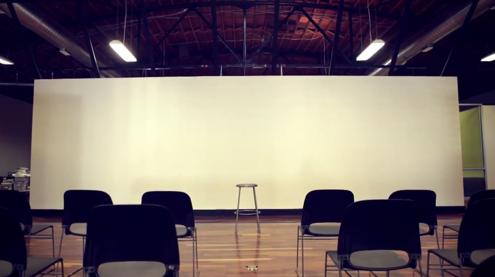

Eventbrite partners with The PPL!
Today The PPL proudly announces partership with Eventbrite, the premier online self-service ticketing platform. Attendees will have a seamless registration experience from the moment of ticket purchase all the way to check-in at the front door of Packard Place next month during the days leading up to the Democratic National Convention.
“Eventbrite is excited to be partnering with The PPL to help journalists come together around the Convention. We know events of all types–from massive rallies to conferences to intimate fundraisers–are a great way for people to deepen their understanding of the issues that matter to them. Technology is facilitating meaningful civic engagement, and the bloggers gathering at The PPL are a great example of that power.” Says David Glasgow, Eventbrite’s Political Community Manager.
“Having Eventbrite join The PPL further solidifies our venue space as the hub for increasing civic discourse.” states cofounder Matt Tyndall, “The PPL’s credentials give access to national and local stage programming, coworking space, networking opportunities, power, wifi and more. Our visitors will gain easy access into our space and slip right in to enjoy the vibrant, bustling atmosphere Eventbrite is certainly contributing to through this partnership.” He continues, “We’re happy to be partnering our organizations; theirs focused on democratization of ticket sales and ours focused on democratization of media voice.”
About The PPL:
The PPL is more than a centrally located building in Uptown Charlotte that will serve as the hub of activity for 1,000 plus independent voices attending the Democratic National Convention. The PPL is the result of a grassroots effort to organize an energetic workspace, combined with engaging programming, for a diverse, creative community of non-credentialed bloggers, journalists, photographers, artists, and activists who will collectively provide the voice of healthy, respectful political discourse for the Democratic National Convention September 3 through 6.
Contact:
Desiree Kane
(704)302-3118
desiree@theppl.us
http://theppl.us
Media partnership with Netroots Nation!
Charlotte, NC
The Democratic National Convention is less than a month away and as it draws near, news of progress and positive change is afoot.
Charlotte-based project The PPL (pronounced “The People”)—one aimed at providing a platform, stage programming, coworking space and resources for the global unaccredited media producers in town for the convention—is partnering up with Netroots Foundation, a nonprofit that brings together online citizens across America, injects progressive voices into the national conversation and advances the values of justice, equality and community in our nation’s politics. It’s this kind of joint effort that exemplifies tangible momentum happening right now in North Carolina’s largest city.
Through this partnership, both organizations will serve a single goal: to increase the level of discourse present in today’s political system through empowering new media makers of all sorts. Packard Place, the location of The PPL events in September, will house these resources, including a stage with programming aimed at connecting decision makers in Washington with the online progressive community.
The PPL’s main stage content is being organized around the four legacy items of the DNCC: healthy children/healthy families, youth employment and civic engagement, building a broader, more inclusive society, and energy/tech/sustainability. Democracy for America will also host a special broadcast studio that will be the hub for creating and distributing content about progressive strategy for 2012 and beyond. This content will be streamed at NetrootsNation.org and online, as well as shared with partner organizations around the country.
The volunteer base is ramping up support for The PPL as well. Queens University is staffing a large majority of the volunteer positions and alongside them will be Progress NC, an affiliate of Progress Now.
Netroots Foundation, which organizes the largest annual progressive conference Netroots Nation, was also a major partner in the successful Big Tent event at the 2008 Democratic National Convention in Denver, with more than 1,000 participants per day representing 200 blogs and dozens of organizations.
Register now: http://dnc2012.eventbrite.com
Press Release: Stage for the people by The PPL
Stage for the people by The PPL
Public is invited to submit ideas for stage presentations during the Democratic National Convention
Charlotte, N.C. – The PPL, in an innovative move to democratize its stage, requests topic submissions for their stage during the Democratic National Convention. The submissions will be accepted through July 3 and announced in early August. In the spirit of extending the concept of an open and accessible convention experience for the community, The PPL’s stage is an opportunity for convention attendees to present and discuss the topics and issues through their own lens.

- the future of civic, voter, and/or engagement
- dialogue vs. diatribe
- the future of social media
- open forum engagement
- the economic divide
- bridging ideological gaps
- faith-based discrimination
- exploring economic and social agendas
- environmental sustainability
- connecting the dots
- healthcare reform
- interconnectedness
- higher education reform
The PPL is a non-partisan grassroots initiative to promote healthy, productive public discourse by providing work space and resources for bloggers and independent media in Charlotte during the DNC. Although we welcome all media personnel, flights and accommodations will not be paid for by The PPL, however we will help with any questions. For more information, visit http://theppl.us or watch the video below:
###